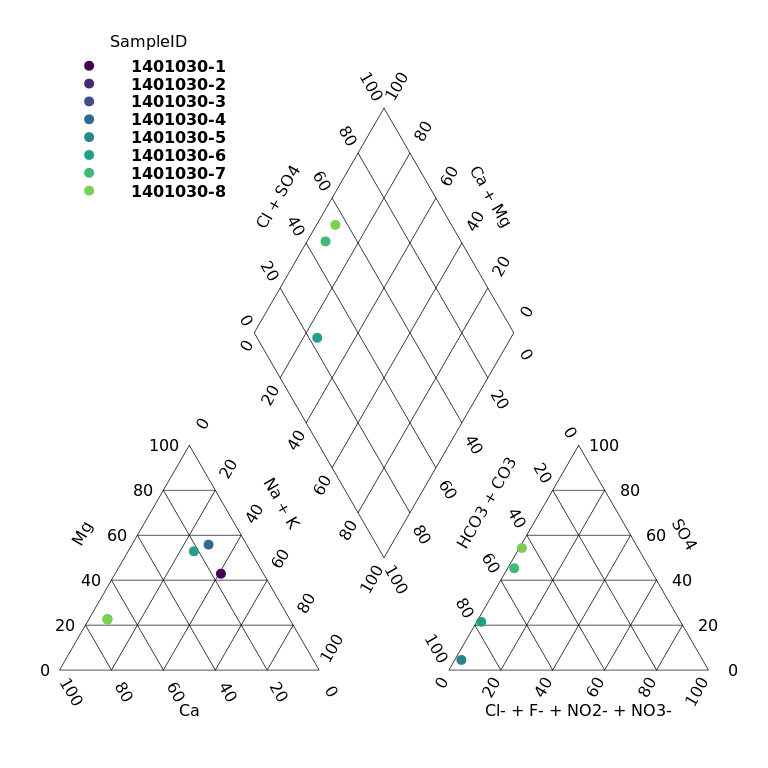

The goal of rems2aquachem is to provide a quick and painless way of converting EMS data into a format compatible with AquaChem.
Data is first downloaded with BC Govs rems package, then formatted for use by AquaChem.
Installation steps
Update RStudio (if it’s been a while)
Update R (if it’s been a while)
Open RStudio
-
Install
remotesIn the console type the following and hit enter
install.packages("remotes")
-
Install
rems2aquachemIn the console type the following and hit enter
remotes::install_github("steffilazerte/rems2aquachem")
If you run into errors right at the start, consider updating your packages.
remotes::update_packages()
Using rems2aquachem
Shiny GUI
-
In RStudio, first load the
rems2aquachempackage (this must be done every time)library(rems2aquachem)
-
Next, launch the shiny GUI.
Type the following in the console and hit enter
ac_gui()

R command line
For advanced users, rems2aquachem can be used directly from R.
Downloads, converts and saves to csv
library(rems2aquachem) r <- rems_to_aquachem(ems_ids = c("1401030", "1401377", "E292373")) #> Checking for locally stored historical data... #> It appears that you already have the most up-to date version of the historic ems data. #> Checking for locally stored recent data... #> Fetching data from cache... r #> # A tibble: 16 x 142 #> StationID SampleID Sample_Date Analysis_Date Project Watertype shortWatertype #> <chr> <chr> <chr> <chr> <chr> <chr> <chr> #> 1 "" "" "" "" "" "" "" #> 2 "075" "140103… "1987-07-0… <NA> "BACKG… "Fresh W… <NA> #> 3 "075" "140103… "1991-08-0… <NA> "BACKG… "Fresh W… <NA> #> 4 "075" "140103… "1994-06-0… <NA> "BACKG… "Fresh W… <NA> #> 5 "075" "140103… "2001-09-0… <NA> "BACKG… "Fresh W… <NA> #> 6 "075" "140103… "2009-11-1… <NA> "BACKG… "Fresh W… <NA> #> 7 "075" "140103… "2010-08-0… <NA> "BACKG… "Fresh W… <NA> #> 8 "075" "140103… "2016-11-0… <NA> "BACKG… "Fresh W… <NA> #> 9 "075" "140103… "2018-06-1… <NA> "BACKG… "Ground … <NA> #> 10 "203" "140137… "1987-07-0… <NA> "BACKG… "Fresh W… <NA> #> 11 "203" "140137… "1989-10-1… <NA> "BACKG… "Fresh W… <NA> #> 12 "203" "140137… "1994-03-2… <NA> "BACKG… "Fresh W… <NA> #> 13 "203" "140137… "2016-11-0… <NA> "BACKG… "Fresh W… <NA> #> 14 "203" "140137… "2020-06-2… <NA> "BACKG… "Ground … <NA> #> 15 "426" "E29237… "2015-03-0… <NA> "GROUN… "Fresh W… <NA> #> 16 "426" "E29237… "2017-10-1… <NA> "GROUN… "Fresh W… <NA> #> # … with 135 more variables: Comment <chr>, Reference <chr>, #> # Quality_control <chr>, Duplicate_ID <chr>, Labcode <chr>, Location <chr>, #> # Geology <chr>, Coord_Lat <chr>, Coord_Long <chr>, X <chr>, Y <chr>, #> # Elevation <chr>, Well_Depth <chr>, Screen_Top <chr>, Screen_Mid <chr>, #> # Screen_Bottom <chr>, Gradient <chr>, Station_Comment <chr>, #> # Sample_Depth <chr>, Temp <chr>, pH_lab <chr>, Cond <chr>, Meas_Alk <chr>, #> # CO3 <chr>, HCO3 <chr>, Cl <chr>, F <chr>, Meas_Hardness <chr>, NH4 <chr>, #> # NO3 <chr>, NO2 <chr>, SO4 <chr>, Ag_diss <chr>, Al_diss <chr>, #> # As_diss <chr>, B <chr>, Ba <chr>, Ca <chr>, Cd_diss <chr>, Cr_diss <chr>, #> # Cu_diss <chr>, DO <chr>, Fe_diss <chr>, K <chr>, Mg <chr>, Mn_diss <chr>, #> # Mo_diss <chr>, Na <chr>, Ni_diss <chr>, Pb_diss <chr>, pH_field <chr>, #> # Sb_diss <chr>, Cond_field <chr>, Se_diss <chr>, Si <chr>, Sr <chr>, #> # Tl_diss <chr>, U_diss <chr>, V_diss <chr>, Zn_diss <chr>, Cd_tot <chr>, #> # Zn_tot <chr>, Fe_tot <chr>, Cu_tot <chr>, Ni_tot <chr>, Al_tot <chr>, #> # Tl_tot <chr>, As_tot <chr>, Sb_tot <chr>, V_tot <chr>, Mo_tot <chr>, #> # Ag_tot <chr>, Pb_tot <chr>, Li <chr>, Mn_tot <chr>, U_tot <chr>, Br <chr>, #> # `Acidity_pH_4_5_(as_CaCO3)` <chr>, `Acidity_pH_8_3_(as_CaCO3)` <chr>, #> # `Alkalinity;_Phenolphthalein_(as_CaCO3)` <chr>, Anion_Sum <chr>, #> # Barium_Total <chr>, Beryllium_Dissolved <chr>, Beryllium_Total <chr>, #> # Bismuth_Dissolved <chr>, Bismuth_Total <chr>, Boron_Total <chr>, #> # Calcium_Total <chr>, Carbon_Dissolved_Organic <chr>, Cation_Sum <chr>, #> # `Cation-Anion_Balance_%=100*(Cations-Anions)/(Cations+Anions)` <chr>, #> # Chromium_Total <chr>, Cobalt_Dissolved <chr>, Cobalt_Total <chr>, #> # Cyanide_WAD <chr>, `Hardness_Total_(Total)` <chr>, #> # `Hydroxide_Alkalinity_(as_CaCO3)` <chr>, Lithium_Total <chr>, #> # Magnesium_Total <chr>, `Nitrate(NO3)_+_Nitrite(NO2)_Dissolved` <chr>, …
Create plots
piper_plot(r, ems_id = "1401030")

stiff_plot(r, ems_id = "1401030")

Vignette/Tutorials
See the rems2aquachem website